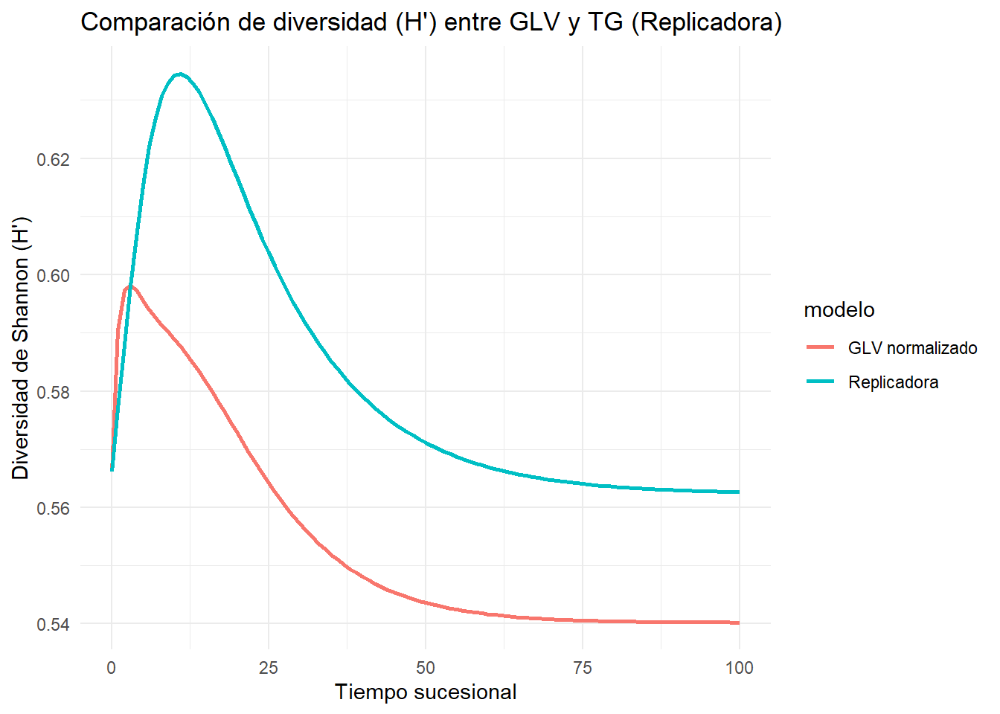

8 Capítulo 8: Sucesión Ecológica
La sucesión ecológica es un proceso fundamental en la ecología de comunidades, que describe cómo cambian las comunidades biológicas a lo largo del tiempo en respuesta a disturbios o modificaciones en el ambiente. Este capítulo explora este fenómeno desde el enfoque clásico y lo vincula con la teoría de juegos, analizando cómo las estrategias de las especies pueden influir en las dinámicas de colonización, establecimiento y reemplazo en distintos escenarios de sucesión primaria y secundaria.
8.1 Sucesión primaria y secundaria: modelos clásicos
La sucesión primaria ocurre en áreas donde no existe previamente un suelo desarrollado, como campos de lava o dunas de arena recién formadas. En contraste, la sucesión secundaria ocurre en áreas previamente ocupadas por comunidades biológicas que han sido perturbadas, como campos agrícolas abandonados o bosques tras incendios.
Los modelos clásicos incluyen:
- Modelo de Clements (1916): Propone que la sucesión es un proceso determinista y dirigido hacia un clímax estable.
- Modelo de Gleason (1926): Sugiere que las especies colonizan y se establecen de manera más individualista y estocástica.
- Modelos matemáticos: Como el modelo de Lotka-Volterra aplicado a la sucesión, que simula la competencia interespecífica durante el reemplazo de especies.
Estos enfoques clásicos sientan las bases para incorporar estrategias evolutivas y de juegos en la interpretación de la sucesión.
8.2 Modelado de la sucesión ecológica tradicional
El modelo tradicional para describir la sucesión ecológica utiliza ecuaciones diferenciales para representar los cambios en la abundancia de las especies a lo largo del tiempo. Consideremos un ejemplo basado en un sistema de competencia Lotka-Volterra simplificado:
# Definir parámetros del modelo
times <- seq(0, 1000, by = 1) # Tiempo de simulación
params <- list(alpha = 0.01, beta = 0.005, gamma = 0.02, delta = 0.01) # Parámetros de interacción
# Definir las ecuaciones del modelo de sucesión
lotka_volterra <- function(time, state, params) {
with(as.list(c(state, params)), {
dN1 <- alpha * N1 * (1 - (N1 + beta * N2)) # Crecimiento de especie pionera
dN2 <- gamma * N2 * (1 - (N2 + delta * N1)) # Crecimiento de especie competidora
list(c(dN1, dN2))
})
}
# Condiciones iniciales
state <- c(N1 = 0.5, N2 = 0.1) # Abundancia inicial de las especies
# Resolver el sistema
data <- ode(y = state, times = times, func = lotka_volterra, parms = params)
data <- as.data.frame(data)
# Graficar los resultados
library(ggplot2)
ggplot(data, aes(x = time)) +
geom_line(aes(y = N1, color = "Especie Pionera")) +
geom_line(aes(y = N2, color = "Especie Competidora")) +
labs(title = "Modelo clásico de sucesión ecológica", y = "Abundancia", x = "Tiempo") +
theme_minimal()
Este modelo permite observar cómo las especies interactúan y compiten en un ambiente dinámico, logrando en algunos casos estados de coexistencia o reemplazo total.
8.3 Modelado de la sucesión ecológica con teoría de juegos
Desde la perspectiva de la teoría de juegos, las especies se modelan como jugadores que eligen estrategias de dispersión o competencia para maximizar su éxito. A continuación, construiremos un modelo basado en una matriz de pagos y simularemos las dinámicas usando replicadores.
8.3.1 Construcción de la matriz de pagos
Supongamos dos estrategias principales: dispersión rápida y competencia eficiente. La matriz de pagos representa el beneficio relativo de cada estrategia cuando interactúan entre sí:
| Estrategia | Dispersión rápida | Competencia eficiente |
|---|---|---|
| Dispersión rápida | 2 | 1 |
| Competencia eficiente | 3 | 2 |
8.3.2 Dinámica replicadora
Usamos la dinámica replicadora para modelar cómo cambian las proporciones de cada estrategia a lo largo del tiempo.
# Definir parámetros de la matriz de pagos
payoff_matrix <- matrix(c(2, 1, 3, 2), nrow = 2, byrow = TRUE)
# Definir las ecuaciones de la dinámica replicadora
replicator_games <- function(time, state, params) {
with(as.list(state), {
p1 <- state[1] # Proporción de estrategia de dispersión rápida
p2 <- state[2] # Proporción de estrategia de competencia eficiente
fitness <- payoff_matrix %*% c(p1, p2) # Éxito de cada estrategia
avg_fitness <- sum(c(p1, p2) * fitness) # Éxito promedio
dp1 <- p1 * (fitness[1] - avg_fitness)
dp2 <- p2 * (fitness[2] - avg_fitness)
list(c(dp1, dp2))
})
}
# Condiciones iniciales
state <- c(p1 = 0.6, p2 = 0.4)
times <- seq(0, 100, by = 1)
# Resolver el sistema
data <- ode(y = state, times = times, func = replicator_games, parms = NULL)
data <- as.data.frame(data)
# Graficar los resultados
ggplot(data, aes(x = time)) +
geom_line(aes(y = p1, color = "Dispersión Rápida")) +
geom_line(aes(y = p2, color = "Competencia Eficiente")) +
labs(title = "Modelo de sucesión basado en teoría de juegos", y = "Proporción", x = "Tiempo") +
theme_minimal()
En este modelo, observamos cómo la proporción de estrategias evoluciona hacia un equilibrio dinámico dependiendo de las interacciones entre las especies.
8.4 Comparando la diversidad a lo largo del tiempo sucesional
Veamos cómo evoluciona la diversidad de Shannon (H′) a lo largo del tiempo sucesional bajo dos enfoques distintos: el modelo clásico de Lotka–Volterra (GLV) y la dinámica replicadora de la Teoría de Juegos. Aunque ambos parten de los mismos parámetros de interacción y condiciones iniciales, en principio pueden dar resultados distintos porque el GLV describe abundancias absolutas mientras que la replicadora trabaja con frecuencias relativas. Para poder compararlos de manera justa, normalizamos las abundancias del GLV en cada paso y calculamos la diversidad en términos relativos, tal como hace la replicadora. De esta forma, los dos modelos muestran trayectorias muy similares, evidenciando que —cuando se expresan en frecuencias— las dos aproximaciones capturan la misma dinámica de cambios en diversidad durante la sucesión ecológica.
# Parámetros
r <- c(0.8, 0.5, 0.2)
A <- matrix(c(1, 0.4, 0.3,
0.4, 1, 0.4,
0.3, 0.4, 1), nrow = 3, byrow = TRUE)
# GLV
GLV <- function(t, N, parms) {
with(as.list(parms), {
dN <- N * (r - A %*% N)
list(c(dN))
})
}
N0 <- c(1, 0.1, 0.1)
times <- seq(0, 100, by = 1)
out_glv <- ode(y = N0, times = times, func = GLV, parms = list(r = r, A = A))
out_glv <- as.data.frame(out_glv)
out_glv$diversidad <- apply(out_glv[,-1], 1, function(x){
p <- x/sum(x) # <-- normalizamos a frecuencias
-sum(p*log(p))
})
# Replicadora
M <- -A
b <- r
RE <- function(t, x, parms) {
with(as.list(parms), {
payoffs <- (M %*% x + b)
avg <- sum(x * payoffs)
dx <- x * (payoffs - avg)
list(c(dx))
})
}
x0 <- N0/sum(N0)
out_re <- ode(y = x0, times = times, func = RE, parms = list(M = M, b = b))
out_re <- as.data.frame(out_re)
out_re$diversidad <- apply(out_re[,-1], 1, function(x){
p <- x/sum(x)
-sum(p*log(p))
})
# Comparación
df_plot <- bind_rows(
out_glv %>% select(time, diversidad) %>% mutate(modelo = "GLV normalizado"),
out_re %>% select(time, diversidad) %>% mutate(modelo = "Replicadora")
)
ggplot(df_plot, aes(x = time, y = diversidad, color = modelo)) +
geom_line(size = 1) +
labs(title = "Comparación de diversidad (H') entre GLV y TG (Replicadora)",
x = "Tiempo sucesional", y = "Diversidad de Shannon (H')") +
theme_minimal()
8.5 Ejemplo real: Sucesión en dunas costeras tras eventos de disturbio
Un ejemplo clásico de sucesión ecológica ocurre en dunas costeras tras disturbios como tormentas o actividades humanas. En estos sistemas:
- Especies pioneras: Gramíneas como Ammophila arenaria, que estabilizan el suelo y facilitan la colonización.
- Especies intermedias: Arbustos y especies competidoras que reemplazan a las pioneras.
- Especies tardías: Bosques costeros en estados de clímax.
La teoría de juegos puede aplicarse para entender cómo las especies pioneras facilitan o compiten con las intermedias, optimizando sus estrategias de establecimiento.
8.6 Preguntas para discusión
- ¿Cómo influye la frecuencia de disturbios en las dinámicas sucesionales?
- ¿Qué papel juegan las especies facilitadoras en los modelos de sucesión?
- ¿Cómo cambia la interpretación de la sucesión si incorporamos estrategias de teoría de juegos?
8.7 ¿Quieres leer mas?
- Clements, F. E. (1916). Plant Succession: An Analysis of the Development of Vegetation.
- Gleason, H. A. (1926). “The Individualistic Concept of the Plant Association.”
- Hofbauer, J., & Sigmund, K. (1998). Evolutionary Games and Population Dynamics.
- Tilman, D. (1997). “Community invasibility, recruitment limitation, and grassland biodiversity.”